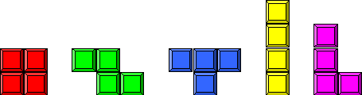

Problem C
Chess x Tetris
Input: c.in
One of the members of the Jury is both a good chess player as well as a fanatical computer game player. As he also works professionally for a computer game company, he is constantly thinking up new combinations of games to market (that’s his third hobby: earning money). One day he thought up the following combination of Chess and Tetris. The player is presented with a Chessboard (8x8 fields, the coloring is irrelevant for this game) and a set of Tetris blocks, i.e. 0 or more of each of the following 5 blocks:

From left to right these Tetris blocks are called an O-block, a Z-block, a T-block, an I-block and an L-block. The task in the game is to find a tiling of the complete Chessboard with a given set of Tetris blocks within a certain amount of time.
To do so the player must select a block, rotate and/or flip it multiple times and then position it somewhere on the Chessboard, until all the Tetris pieces are placed on the Chessboard and the Chessboard is completely filled up. Note that flipping a Tetris block is the same as mirroring the Tetris block in either the vertical or the horizontal axis.
He asked a programmer to come up with a first draft version, and also with a list of input sets that could be used on different levels. The programmer had to make sure that each of the input sets the program would use has a least one solution for the tiling problem.
Unfortunately, the programmer has not yet had enough time to come up with a sufficiently long list of input sets. Therefore our member of the Jury has decided to ask you to help him. He has generated a random list of input sets, and you are asked to write a program that determines if a given input set can be used to completely tile the Chessboard.
Input
The first line of the input contains the number of runs R (1 ≤ R ≤ 100). For each run there is one line with 5 integers bi
(0 £ bi £ 16). Each integer gives the number of a specific type of Tetris block that are in the input set to be tested, in the order as they appear in the picture above: number of O-blocks, number of Z-blocks, number of T-blocks, number of I-blocks and number of L-blocks.
The sum of the number of blocks in an input set is always 16.
Output
For each test case, you must output a line containing the string ‘
Tiling possible.’ when it is possible to find a complete tiling of the Chessboard with the given input set. If it is not possible to completely tile the Chessboard using the input set, you must output the string ‘Tiling not possible.’.
|
Sample Input |
Output for the Sample Input |
|
4 16 0 0 0 0 4 4 4 4 0 0 16 0 0 0 4 3 2 4 3 |
Tiling possible. Tiling not possible. Tiling not possible. Tiling possible. |